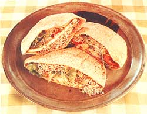

Three Delicious, Nourishing, Meatless Sandwiches
You don't have to be a vegetarian to love these recipes we "stole" from Leona Farquhar in Hendersonville, North Carolina
By the Mother Earth News editors
July/August 1977
This may come as a surprise to some folks, but we're gonna lay it on ya anyway: Friends, food that's good for you can actually taste good, too!
Why is it that so many "health food" fanciers prepare the kind of dishes that are sure to send any (rightfully wary) potential converts rushing to the nearest hamburger stand? We'll never know, because healthful food can be absolutely scrumptious. And we think the recipes on these pages more than prove that point.
We got them from a woman right here in Hendersonville named Leona Farquhar (pictured above). Leona runs a restaurant/ natural food store called The Merry Miller . . . a favorite luncheon spot for many MOTHER staffers who like the relaxed atmosphere, the rustic decor, and - not least of all - the delightful fragrance always wafting up from the ole M.M. soup pot.
Leona's a Minnesota-born Finn who came to North Carolina in 1928 and who now considers herself a true Tarheel. She's been an activist in the natural food movement for 25 years and a vegetarian for 19, and she's always willing to dispense sound nutritional advice along with the tasty food she serves up.
Given the high quality of Ms. Farquhar's fare, it was inevitable, sooner or later, that we would ask to publish some of her good Merry Miller recipes in MOTHER. But, to our surprise, Leona was reluctant to give us the necessary permission! It seems that she thought her small-scale operation was already as big and busy as it ought to be, and she didn't want the publicity!
Well, we kept on pestering Leona anyway, and finally she agreed to share some of her secrets (her "conjurings," as she calls them) with MOTHER's readers. But, be advised: According to Ms. Farquhar, the real secret of her cooking - available to anyone - is simply this: "I make food with a happy heart, and serve it with loving care."
The sandwiches shown here - all made with pita bread and topped with fresh, delicately crisp alfalfa sprouts - may look alike, but each has a unique and wonderful flavor all its own. And what's more, they're as inexpensive to prepare as they are nourishing. Here's how these treats are put together:
TOMATO/ CHEESE/ ONION SANDWICH
Begin with one "loaf" of pita bread (the round, hollow bread - often covered with sesame seeds - that's sold at health food and Middle Eastern stores and some supermarkets) for every two sandwiches that you intend to make. Cut each loaf in half with scissors.
Make a spread by combining mayonnaise (Leona prefers the kind that contains safflower oil), minced onion, minced garlic (optional), a dash of Sovex Hickory Smoked Yeast (a commercial brewer's yeast seasoning with a bacon-like taste), and some Dr. Bronner's Bouillon (another all-purpose seasoning available at health food stores). Leona purposely indicates no specific amounts for these ingredients: "I don't work from recipes. Foods should be prepared creatively, to suit one's own tastes!"
Cover the insides of each bread pouch with the spread, then slip in a slice of Monterey Jack or mild cheddar cheese, a slice or two of tomato, a little chopped onion, and some hand-torn leaf lettuce ("Never head lettuce," says Leona). Fill whatever space is left with fresh alfalfa sprouts. Then garnish each sandwich, if you wish, with sliced raw mushrooms or with small, colorful chunks of
avocado, radish, zucchini, cucumber, or yellow squash.
EGG SALAD SANDWICH
Hard-boil two eggs for each sandwich, then cool them and mash 'em in a bowl. Add finely chopped celery, minced onion, minced garlic (if you wish), a pinch of sweet basil or oregano, a sprinkle of Vegesal or some other vegetized salt, and just enough mayonnaise to bind the mixture. Spread both inner sides of a half pita loaf with the egg blend, half-fill the pocket with torn lettuce, and fill the remaining space with alfalfa sprouts. Decorate the finished sandwiches as desired, with sliced tomato or with any of the garnishes mentioned in the Tomato/ Cheese/ Onion recipe.
MIXED BEAN WITH TOFU SANDWICH
Soak one-half pound of dried garbanzos (chick peas) and one-half pound of dried red beans in separate containers overnight. Cook the beans in two different pots-each with enough water to fully cover the legumes-for 30 to 45 minutes or until they squash when pressed with the tines of a fork.
Drain and combine the beans, then mash them (Leona uses a potato masher) until they're broken into a pasty pulp but not too mushy. Add one small, finely chopped onion, half a green pepper (also finely chopped), one drained 11- to 12-ounce package of store-bought tofu, one-half teaspoon of garlic powder, about two tablespoons of soy sauce or Dr. Bronner's Bouillon (this takes the place of salt), and enough mayonnaise to bind all the ingredients.
Spread the mixture over both inner "walls" of a half pita loaf, and again fill the sandwich halfway with leaf lettuce and the rest of the way with sprouts. Garnish each sandwich with slices of raw vegetable as suggested in the preceding recipes.
And there you have them: three different light-but-satisfying summertime sandwiches . . . each one a meatless source of protein . . . and each one a delicious meal in itself!
 LEONA FARQUHAR Leona Farquhar, former owner of restaurant/natural food store, The Merry Miller shares some of her secret recipes. |
 LEONA FARQUHAR |
|